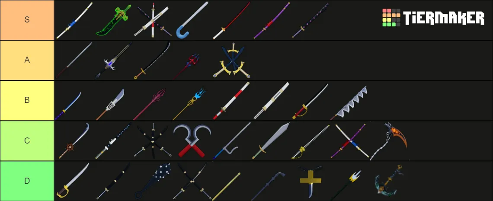
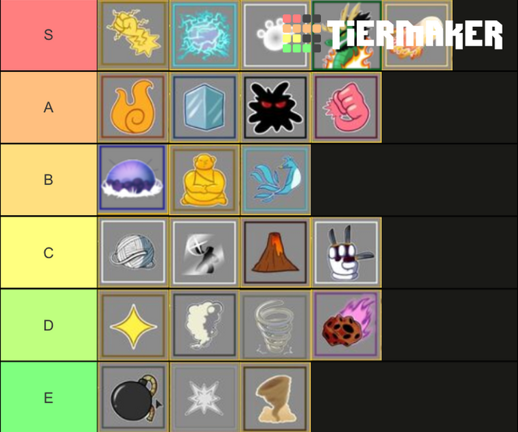

- Do not buy everything
- Get a fruit early game
- Do not fight bosses that are higher level than you
- Do not fight players with a coat,title or a name and numbers above their head
- Do not fight players that have higher bounty than you
- Accept quests
- Do not try to go to islands which are not recommended
- If you click the compass on your left side of you screen,you will be directed to your recommended quest
- Team up if you want to survive
- Do not be a marine be a pirate
- Get a smoke fruit or any elemental fruit
- When you level up you get stat points. Put them in melee,defense,blox fruit(if you have a fruit) or sword(if you have a sword)never gun
- Do not trade in first sea with a random person only in second sea with the cafe table and the third sea with the turtle mansion tables
- For level 50 and above players before rolling a fruit,get some one to hit you then reset your character
- Do the sabre quest.If you are a rubber fruit user, you are immune to the thunder god boss,rumble and quake fruit users
- If you are a quake or rumble fruit user do not go near a rubber fruit user a rubber fruit user can stretch their arms and legs but pole v2 can damage them
- You get pole v1 from the thunder god
- The fruits that can fly are 'Ghost,Magma,Light,Sound,Phoenix,Dragon(transformed),
Shadow,Venom'
- There is a NPC called the blox fruit dealer which sells you fruits there are new fruits every 4 hours
- Do not buy fast boats get the portal fruit instead and grind until you have mastery 200 to get world warp
A Blox Fruits sword and Fruit tier list (my opinion)

